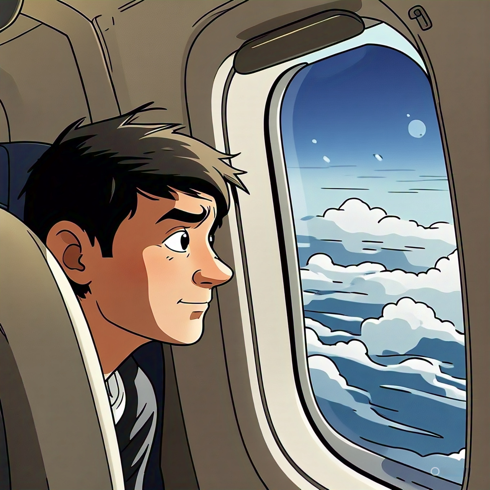
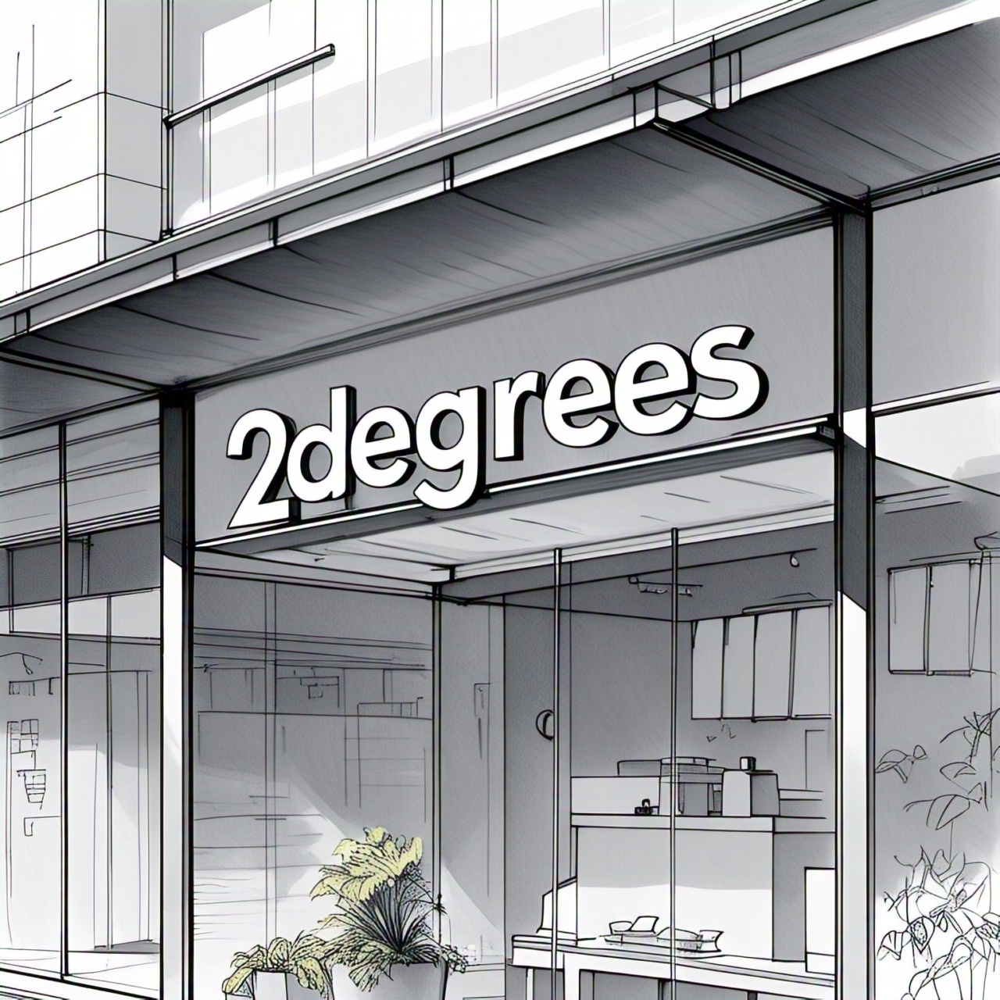
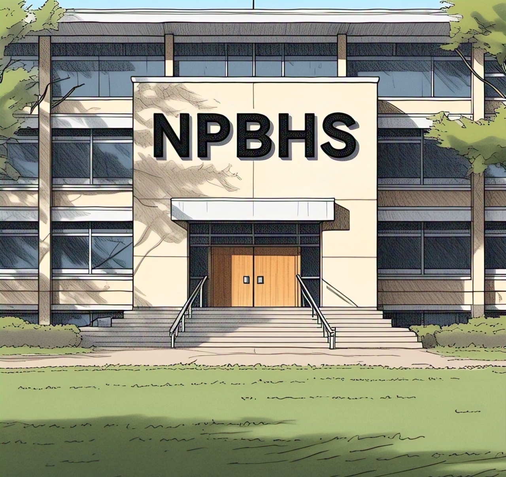
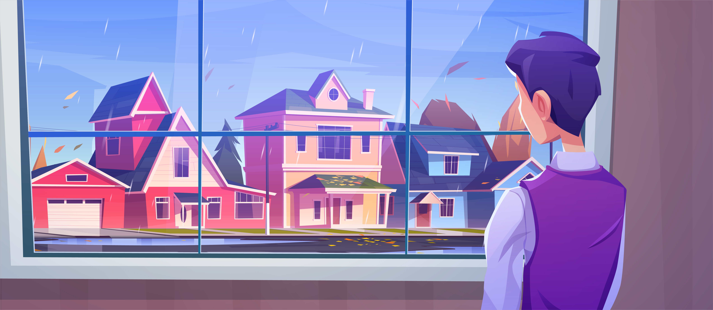
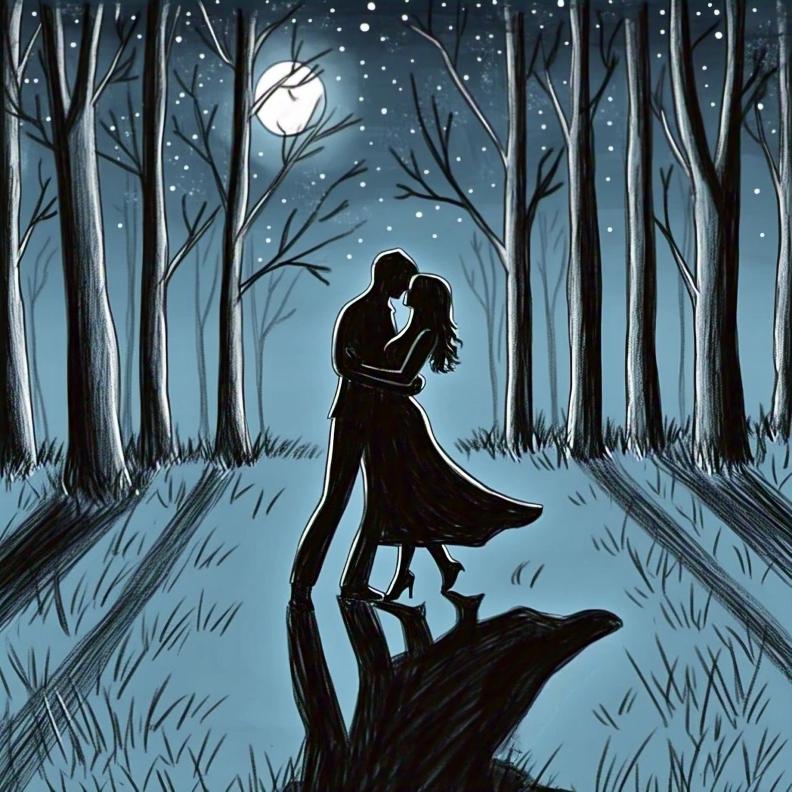
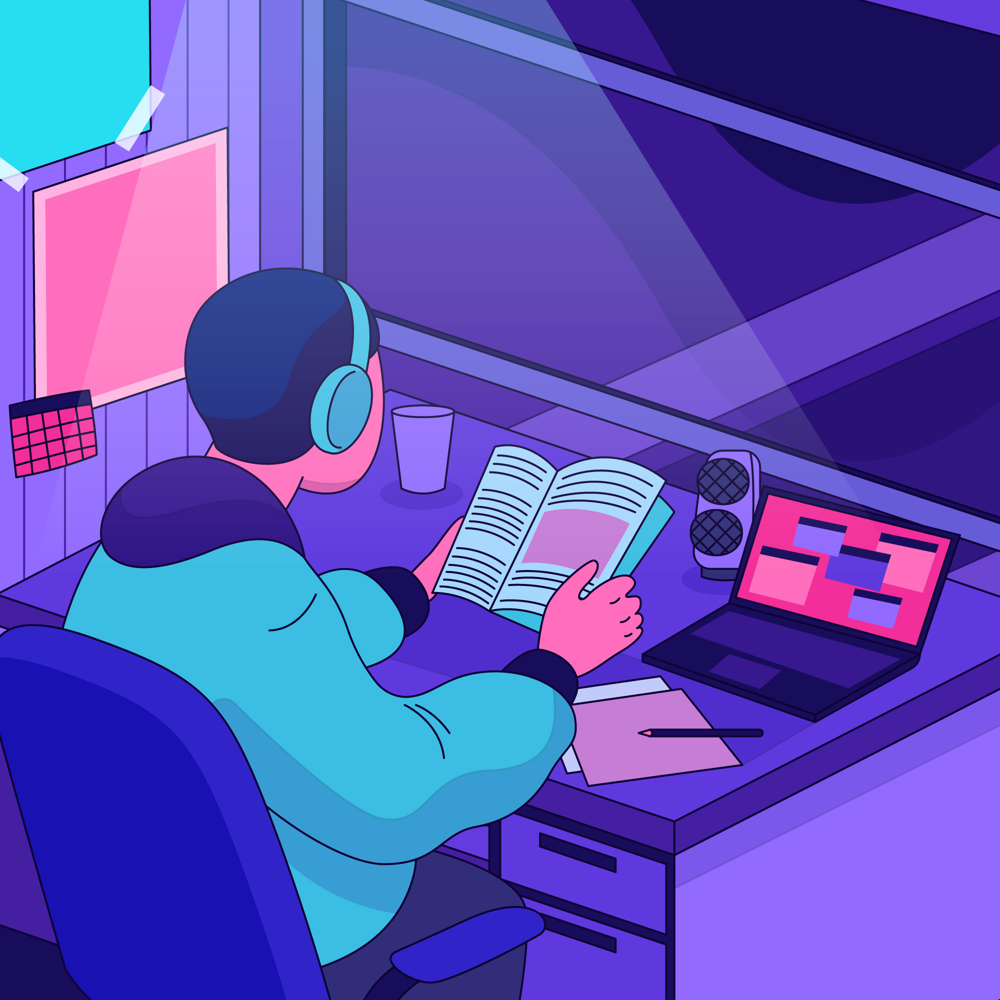
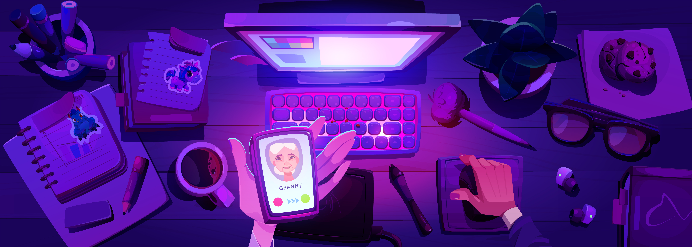
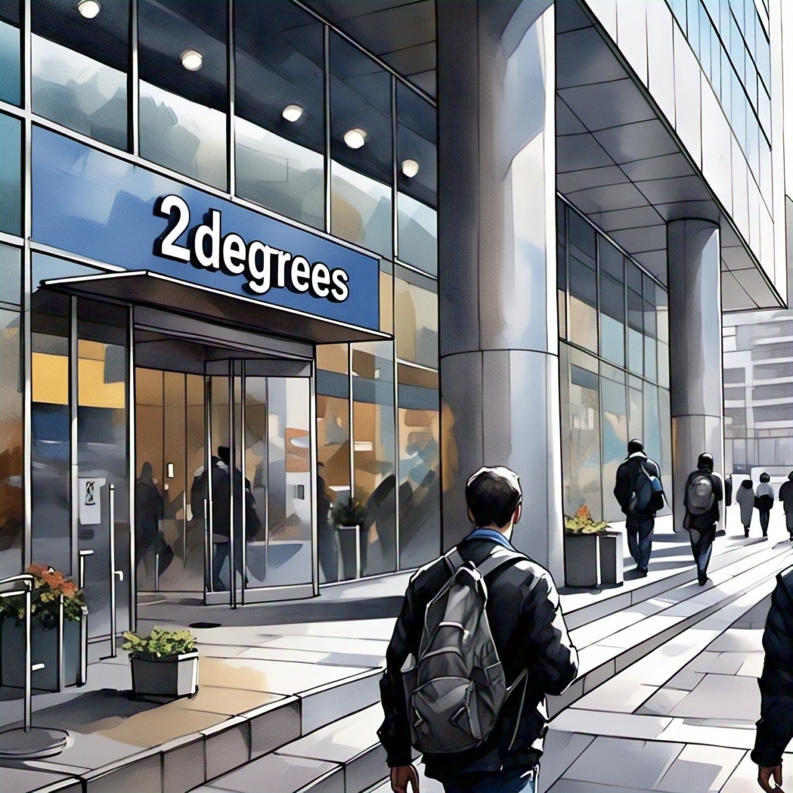

I left behind everything I knew—family, friends—and stepped into the unknown. Day 1 in Auckland, New Zealand, began with hope in my heart.

Finding a 2degrees store gave me a way to stay connected, easing the distance with every call.

Homesickness lingered beneath Auckland’s iconic Sky Tower, but staying connected kept my loved ones close despite the miles.
In New Plymouth, my future took shape under Mt. Taranaki’s gaze, with a quiet strength supporting me through the newness.
Late-night study sessions and early lectures defined my student life—having reliable connection made it all a bit easier.

Two months in, Covid struck like a storm, leaving me alone, staring into the rainy unknown, my heart aching for connection.

A phone call broke the silence, bringing a burst of joy and love from afar—connection made it possible.

A month later, prom night arrived—I whisked my partner to a special spot, our hearts beating as one under the full moon’s glow.

The Perfect Dance unfolded—we twirled all night to that song, a memory etched in joy, made even sweeter knowing I could share it with family far away. Press the button to relive it!

One year later… Working in my room, stressed with studies, juggling part-time jobs, and facing financial insecurities.

A call to my grandma brought relief—her voice a soothing balm amidst the chaos, thanks to staying connected.

1 year later ...Today’s the day—I step into the 2degrees building for my dream interview! It’s been my lifeline, keeping me close to loved ones and easing my loneliness. Will they say yes? I’m jittery, excited, and ready to leap into this new chapter with a grin!
